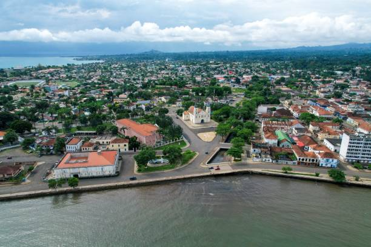
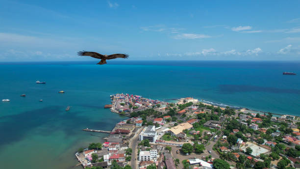
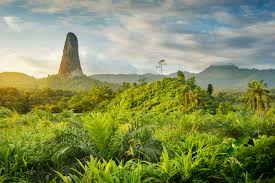
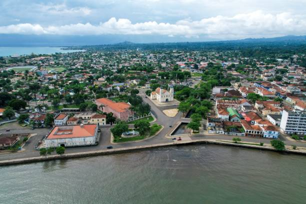
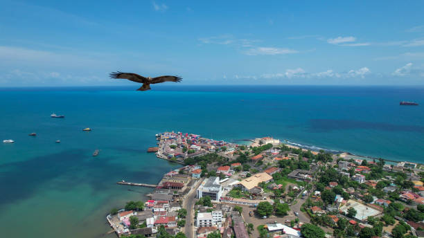
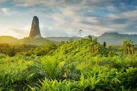

TOP DESTINATIONS
Discover stunning spots like Banana Beach, Pico Cão Grande, and the historic Roça Agostinho Neto. From lush forests to quiet beaches, the islands offer natural beauty, rich culture, and a peaceful atmosphere.
CULTURE AND HISTORY
The culture of São Tomé is a rich blend of African and Portuguese influences, reflected in its music, dance, cuisine, and oral traditions. Local rhythms like ússua, puita, and socopé are unique to the islands, while dishes such as calulu and grilled fish with breadfruit highlight the creativity of São Toméan cuisine. Since gaining independence in 1975, the country has increasingly embraced and celebrated its cultural heritage and historical identity.
LOCAL CUISINE
Try calulu, moqueca, and tropical fruits fresh from the market.
OUR FAUNA AND FLORA

PHOTO GALLERY
 





WHERE ARE WE?